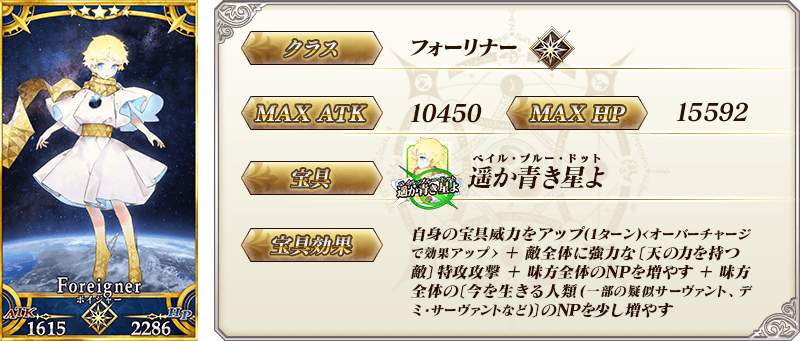
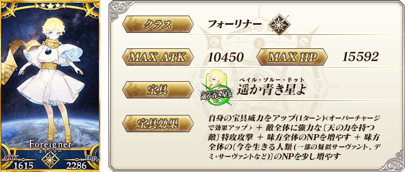
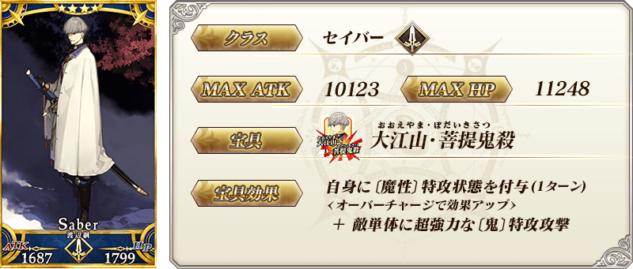
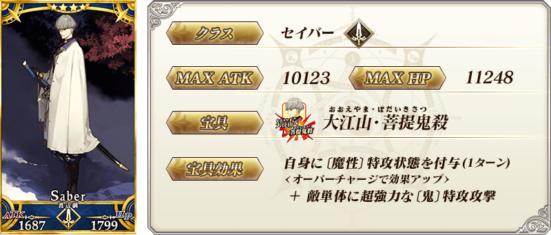
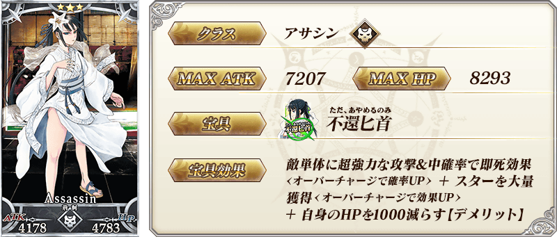
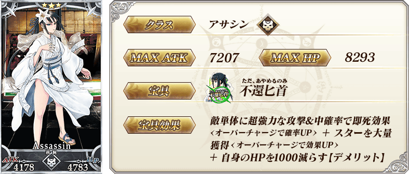
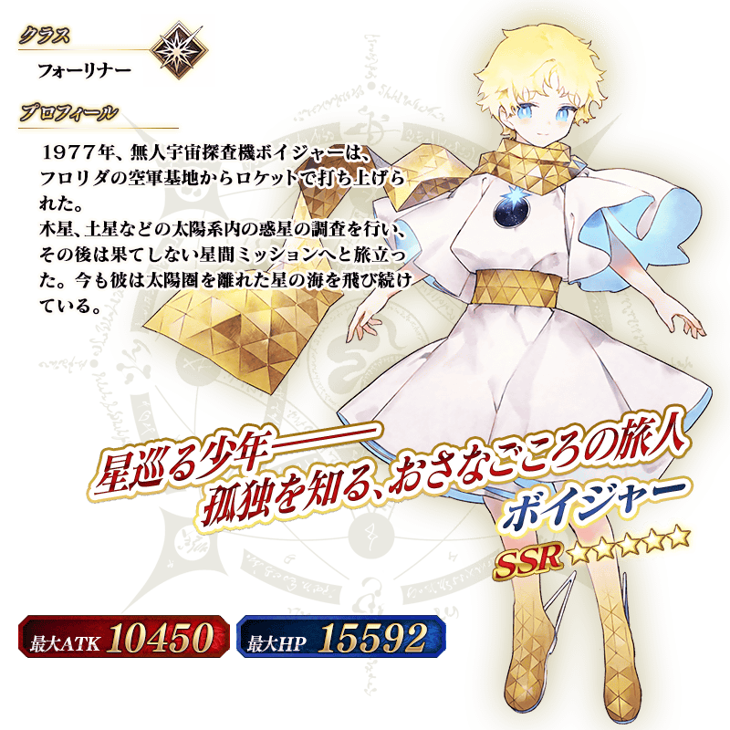

◆「迦勒底男性精選2021Pick Up3召喚」期間◆
期間:2021年3月10日(三) 17:00～3月24日(三) 11:59
期間限定「迦勒底男性精選2021Pick Up3召喚」舉辦！
舉辦只限男性從者做為對象的「迦勒底男性精選2021Pick Up3召喚」！
※期間限定活動「聖杯怪盗天草四郎 ～鬧劇博物館～」中活躍的「★3(R)荊軻」也會被抽出。
「迦勒底男性精選2021Pick Up3召喚」中，從期間限定活動「聖杯怪盗天草四郎 ～鬧劇博物館～」關聯從者之中，包含1位期間限定從者的下述從者Pick Up！
▼期間限定從者
・★5(SSR)Voyager
▼Pick Up從者
・★4(SR)渡邊綱
・★3(R)荊軻
另外，下述的期間限定概念禮裝Pick Up！
・★5(SSR)フラワー・アンド・カフェ
・★5(SSR)クラブ・アルゴノーツ
・★4(SR)探偵ヱドモン～蘇る悪夢編～
・★4(SR)ラウンズ・オン・アイス
・★4(SR)百鬼夜行
・★3(R)カルデア・イレブン
・★3(R)至高の学び舎
・★3(R)スプレッド・ガン
・★3(R)∞ドリーム
上述9種的概念禮裝装備することで、期間限定活動「聖杯怪盗天草四郎 ～鬧劇博物館～」中會提升活動道具的掉落獲得數。
Pick Up期間中，Pick Up對象從者與概念禮裝的出現機率提升！
詳情請在聖晶石召喚畫面左下的召喚詳細確認。
11次召喚中確定1張★4(SR)以上和確定1位★3(R)以上的從者！ ※確定★4(SR)以上包含從者和概念禮裝。
◆有關從者的注意◆
※除了性別「男性」的從者外，下述的從者也包含在抽出對象。
・★5(SSR)狄奧斯庫洛伊
・★5(SSR)俄里翁
・★5(SSR)恩奇杜
・★4(SR)夏爾・德翁
・★4(SR)阿斯托爾福(Rider)
・★3(R)荊軻
※下述的從者在Pick Up期間結束後不會追加到故事召喚。
・★5(SSR)Voyager
※下述的從者在Pick Up期間結束後仍會在故事召喚被抽出。
・★4(SR)渡邊綱
・★3(R)荊軻
◆有關概念禮裝的注意◆
※下述的概念禮裝，Pick Up期間中也能靠友情點數召喚獲得。
・★3(R)カルデア・イレブン
・★3(R)至高の学び舎
・★3(R)スプレッド・ガン
・★3(R)∞ドリーム
※在自動變還設定登錄★3(R)概念禮裝的情況，下述的概念禮裝會變成自動變還的對象。
・★3(R)カルデア・イレブン
・★3(R)至高の学び舎
・★3(R)スプレッド・ガン
・★3(R)∞ドリーム
 

 

 
※上述「★3(R)荊軻」的卡面為靈基再臨第1階段。

※上述「★3(R)荊軻」的卡面為靈基再臨第1階段。


|
★★★★★SSR
|


|
★★★★★SSR
|

|
★★★★SR
|


|
★★★★SR
|

|
★★★★SR
|

|
★★★R
|


|
★★★R
|

|
★★★R
|

|
★★★R
|

介紹在本召喚Pick Up的2位從者寶具演出！
在「Fate/Grand Order」官方網站內的公告中，以影片公開寶具演出，敬請確認。
※「★5(SSR)Voyager」的寶具會根據再臨階段變化演出。
【★5(SSR)Voyager】
【★4(SR)渡邊綱】
其他還有，
・迦勒底男性精選2021
・聖杯怪盗天草四郎 ～鬧劇博物館～
・迦勒底男性精選2021Pick Up召喚(每日交替)
以期間限定舉辦中！
關於詳情，請自下述橫幅確認。
■「迦勒底男性精選2021」詳細情報

■「聖杯怪盗天草四郎 ～鬧劇博物館～」詳細情報

■「迦勒底男性精選2021Pick Up召喚(每日交替)」詳細情報